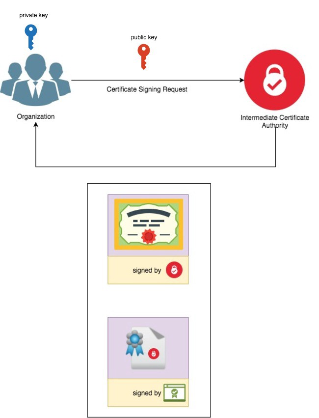

来看看互联网世界的基石
通信过程的简化模型
第一阶段: 服务器向CA发起证书签名请求
服务器组织生成一个私钥
openssl genrsa -out target.key 1024
从私钥文件中得到公钥, 这个公钥会被用于给CA签名
openssl rsa -in target.key -pubout -out target_pub.key
使用私钥生成一个证书签名请求, 在生成过程中需要填写证书申请人的一些信息
openssl req -new -key target.key -out target.csr
生成完成后, 可以运行下面命令看看这个证书签名请求文件里都有什么
openssl req -text -in target.csr -verify
例如:

可以看到公钥也在里面.
接下来把证书签名请求文件提交给CA, CA审核通过后对该文件进行签名
openssl x509 -in target.csr -out target.crt -req -signkey ca.key -days 365
target.crt就是签名成功后的证书. 对于常见的自签名场景来说, ca.key就是target.key, 用自己的密钥去签名自己的证书请求, 自签名请求命令就是
openssl x509 -in target.csr -out target.crt -req -signkey target.key -days 365
然后CA将target.crt以及由Root CA签名的CA证书一同返回给申请人. 如下图所示:

Root CA的证书就那么几个, 内置在操作系统里, 受到所有程序的信任, 因此申请人得到由Root CA签名的CA证书后, 就可以信任该CA组织, 进而可以信任该CA组织签发给自己的证书. 对于其他的客户端而言也是这样.
第二阶段 客户访问服务端
客户端发起请求, 服务端会把自己的证书和签自己证书的CA机构的证书一起发过去

如图, 由于Root CA是可信任的, 因此该CA机构是可信任的, 因此该CA机构签发的服务端证书也是可信任的, 这叫 信任链.
信任建立之后, 客户端生成一个对称密钥, 用服务端证书里的公钥加密之后发送给服务端, 最后双方都用这个对称密钥来加密数据进行信息交换 (实际上, 对称密钥的生成是服务端和客户端通过彼此协商过程中的各种消息各自使用相同的算法生成的, 并不会直接在网络上传输, 只不过这些消息中有一部分是公钥加密后传输的, 因此也类似于将对称密钥进行公钥加密了)


信息提取
生成一个包含密钥和公钥的文件,既可以用来加密也可以用来解密.
openssl genrsa -out target.key 1024
从这个包含公钥和私钥的文件中提取出公钥
openssl rsa -in target.key -pubout -out target_pub.key
从公钥中提取rsa公钥信息
openssl rsa -pubin -in (filename) -text
提取其中模数
openssl rsa -pubin -in (filename) -text -modulus
加密解密
公钥加密
openssl rsautl -encrypt -in target -out target.enc -inkey target_pub.pem -pubin
私钥解密
openssl rsautl -decrypt -in target.enc -out target -inkey target_pri.pem
用三种填充方式解密,(第一种没有填充)
openssl rsautl -decrypt -in flag.enc -inkey private.key -out flag.dec
openssl rsautl -decrypt -in flag.enc -inkey private.key -out flag.dec -oaep
openssl rsautl -decrypt -in flag.enc-inkey private.key -out flag.dec -pkcs
K8s场景下的证书管理
首先为集群生成一个证书, 代表CA签发机构
# 生成2048位的包含公钥和私钥的文件
openssl genrsa -out ca.key 2048
# 在ca.key文件基础上生成ca.crt
openssl req -x509 -new -nodes -key ca.key -subj "/CN=${MASTER_IP}" -days 10000 -out ca.crt
然后创建一个服务端证书
# 生成一个2048位的server.key文件
openssl genrsa -out server.key 2048
创建一个用于生成证书签名请求（CSR）的配置文件。 保存文件（例如：csr.conf）前，记得用真实值替换掉尖括号中的值（例如：<MASTER_IP>）。 注意：MASTER_CLUSTER_IP 就像前一小节所述，它的值是 API 服务器的服务集群 IP。 下面的例子假定你的默认 DNS 域名为 cluster.local。
[ req ]
default_bits = 2048
prompt = no
default_md = sha256
req_extensions = req_ext
distinguished_name = dn
[ dn ]
C = <country>
ST = <state>
L = <city>
O = <organization>
OU = <organization unit>
CN = <MASTER_IP>
[ req_ext ]
subjectAltName = @alt_names
[ alt_names ]
DNS.1 = kubernetes
DNS.2 = kubernetes.default
DNS.3 = kubernetes.default.svc
DNS.4 = kubernetes.default.svc.cluster
DNS.5 = kubernetes.default.svc.cluster.local
IP.1 = <MASTER_IP>
IP.2 = <MASTER_CLUSTER_IP>
[ v3_ext ]
authorityKeyIdentifier=keyid,issuer:always
basicConstraints=CA:FALSE
keyUsage=keyEncipherment,dataEncipherment
extendedKeyUsage=serverAuth,clientAuth
subjectAltName=@alt_names
# 基于上面的配置文件生成证书签名请求
openssl req -new -key server.key -out server.csr -config csr.conf
# 基于 ca.key、ca.crt 和 server.csr 等三个文件生成服务端证书：
openssl x509 -req -in server.csr -CA ca.crt -CAkey ca.key \
-CAcreateserial -out server.crt -days 10000 \
-extensions v3_ext -extfile csr.conf -sha256
# 查看证书签名请求：
openssl req -noout -text -in ./server.csr
# 查看证书
openssl x509 -noout -text -in ./server.crt
完成之后, 将证书们添加到API Server的配置文件中
--client-ca-file=/yourdirectory/ca.crt
--tls-cert-file=/yourdirectory/server.crt
--tls-private-key-file=/yourdirectory/server.key
在kubectl的配置文件中加入用户证书来添加用户(minikube场景)
为什么客户端也需要证书呢? 因为kubectl 请求api server的过程是一个双向认证的过程, 不仅仅是客户端需要验证服务器的身份, 服务器也需要验证客户端的身份来完成权限鉴定.
参考https://medium.com/@HoussemDellai/rbac-with-kubernetes-in-minikube-4deed658ea7b
创建用户证书
mkdir cert && cd cert
openssl genrsa -out user1.key 2048
openssl req -new -key user1.key -out user1.csr -subj “/CN=user1/O=group1”
# 使用minikube的ca来签发用户证书
openssl x509 -req -in user1.csr -CA ~/.minikube/ca.crt -CAkey ~/.minikube/ca.key -CAcreateserial -out user1.crt -days 500
kubectl临时使用该用户证书
kubectl config set-credentials user1 --client-certificate=user1.crt --client-key=user1.key
kubectl检查配置
kubectl config view
要将该用户设置成默认角色, 在.kube/config中添加证书, 例如
apiVersion: v1
clusters:
- cluster:
certificate-authority: /home/ch4ser/.minikube/ca.crt
extensions:
- extension:
last-update: Wed, 15 Feb 2023 14:46:55 CST
provider: minikube.sigs.k8s.io
version: v1.28.0
name: cluster_info
server: https://192.168.49.2:8443
name: minikube
contexts:
- context:
cluster: minikube
extensions:
- extension:
last-update: Wed, 15 Feb 2023 14:46:55 CST
provider: minikube.sigs.k8s.io
version: v1.28.0
name: context_info
namespace: default
user: minikube
name: minikube
- context:
cluster: minikube
user: user1
name: user1-context
current-context: minikube
kind: Config
preferences: {}
users:
- name: minikube
user:
client-certificate: /home/ch4ser/.minikube/profiles/minikube/client.crt
client-key: /home/ch4ser/.minikube/profiles/minikube/client.key
- name: user1
user:
client-certificate: /home/ch4ser/CloudWorkspace/cert/user1.crt
client-key: /home/ch4ser/CloudWorkspace/cert/user1.key
切换上下文
kubectl config use-context user1-context
# check
kubectl config current-context
# 切回去
kubectl config use-context minikube
ps: kubectl 设置用户证书去访问的时候, –token选项不会生效, 无法使用token去代表sa
请求 kubernetes API server
需要使用证书去请求, 查看.kube/config得到kubectl证书之后:
curl --cert /home/ch4ser/.minikube/profiles/minikube/client.crt --key /home/ch4ser/.minikube/profiles/minikube/client.key -k https://192.168.49.2:8443/api/v1/namespaces
其中192.168.49.2:8443是.kube/config中的API server 地址
速查: https://help.aliyun.com/document_detail/160530.html
其他
- TLS 是 SSL V2 标准化后的产物, 事实上现在大家用的都是tls, 只是习惯了ssl这个称呼
- 在网站启用https之后, 使用http访问会被重定向到443端口上以使用https服务
- 如果请求中的cookie中有secure属性, 浏览器只会允许该请求发送到https服务中, 而不是http (除了发往localhost)
- Insecure sites (with http: in the URL) can’t set cookies with the Secure attribute.
涉及到nginx配置反向代理到https中存在的坑可以参考 link